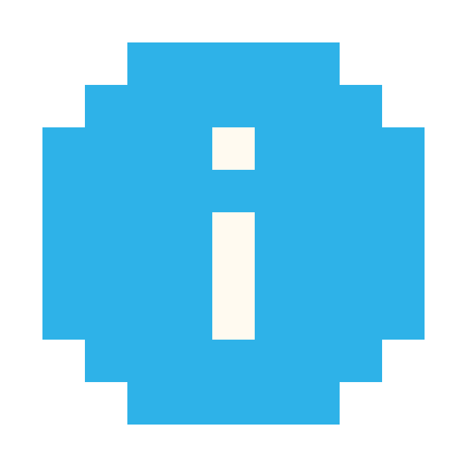

英語の駆け込み寺
TOEIC 400点少しで困っている方へ
月額5,000円〜 / 1週間無料体験
英語学習のお悩み、解決します
TOEIC 400点から600点へ
TOEIC 400点少しで困っている方を、600点以上に引き上げるための専門プログラム。「かけ込み寺」メソッドで短期間でのスコアアップを実現します。
カリスマ講師の直伝メソッド
片野拓夫氏直伝の「かけ込み寺」メソッドをAI化。TOEIC満点講師の知識と経験を、いつでもどこでも受けられます。
国際英語の仲間入り
単なる試験対策ではなく、実際に使える「国際英語」を身につけます。世界で通用する英語力で、あなたの可能性を広げましょう。
"The best time to plant a tree was 20 years ago. The second best time is now."
かけ込み寺式 4つの学習法
音読トレーニング

瞬間英作文
文法の急所
単語のかけ込み
英語のお悩み、今すぐ解決しませんか？
TOEIC 600点の場合、年収が平均100万円アップするというデータも。
月額5,000円〜
まずは1週間の無料体験から